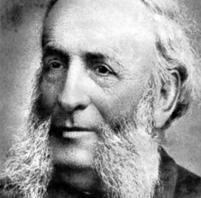
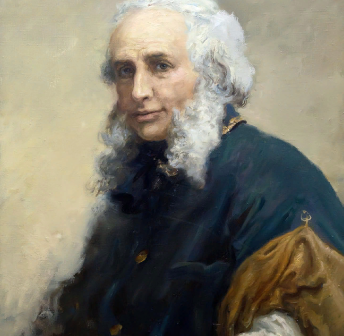
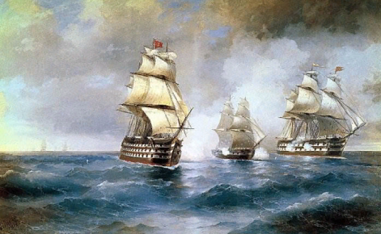

Детство и юность
Родился Иван Константинович 17 (29) июля 1817 г. в Феодосии. Ещё в детстве у Ивана были выявлены способности к музыке и рисованию. Первые уроки художественного мастерства были даны ему известным феодосийским архитектором, Я.Х.Кохом.
Став выпускником училища, Айвазовский поступил в симферопольскую гимназию. После ее окончания, по протекции феодосийского градоначальника, А.И.Казначеева, будущего художника зачислили в столичную Императорскую Академию художеств.

Дальнейшее обучение
В августе 1833 г. Айвазовский прибыл в Санкт-Петербург. Он учился у таких мастеров, как М.Воробьев, Ф.Таннер, А.И. Зауервейд. Его картины, написанные во время обучения, были удостоены серебряной медали. Айвазовский был настолько одаренным студентом, что его выпустили из Академии на 2 года раньше срока. Для самостоятельного творчества Ивана Константиновича отправили сперва в родной Крым, а потом в заграничную командировку на 6 лет.
КРЫМСКО-ЕВРОПЕЙСКИЙ ПЕРИОД
Весной 1838 г. Айвазовский уехал в Крым. Там он создавал морские пейзажи, занимался батальной живописью. В Крыму он пробыл 2 года. Затем вместе с В.Штернбергом, своим товарищем по пейзажному классу, художник отправился в Рим. По дороге они посетили Флоренцию и Венецию, где состоялось знакомство Айвазовского с Н.Гоголем.
